This reading edition reflects the Ignite 2026 presentation. Preview labels, benchmarks, customer figures, and roadmap dates are retained as presented, not independently updated availability guidance.
Document understanding in Microsoft Foundry
Azure Document Intelligence and Content Understanding are part of Microsoft Foundry, used by more than 120,000 customers according to the presentation.
The session explores why trusted agents need these capabilities, and what it takes to extract knowledge reliably.


In the AI agent era, data is your edge
Customers across industries are bringing agents into their workflows. To succeed, an agent needs to find, understand, and act on their data. But much of that information is trapped in files, and extracting knowledge from unstructured content is hard.
Pages may be difficult to read. A character can look like a different character. Dates and currencies depend on locale and domain context. Evidence may span pages, while formatting such as strikethrough and layout such as footnotes change the meaning.
Similar-looking fields add another challenge: a bank account number and a business ID can both be strings of digits. Reliable extraction needs more than recognizing the characters.

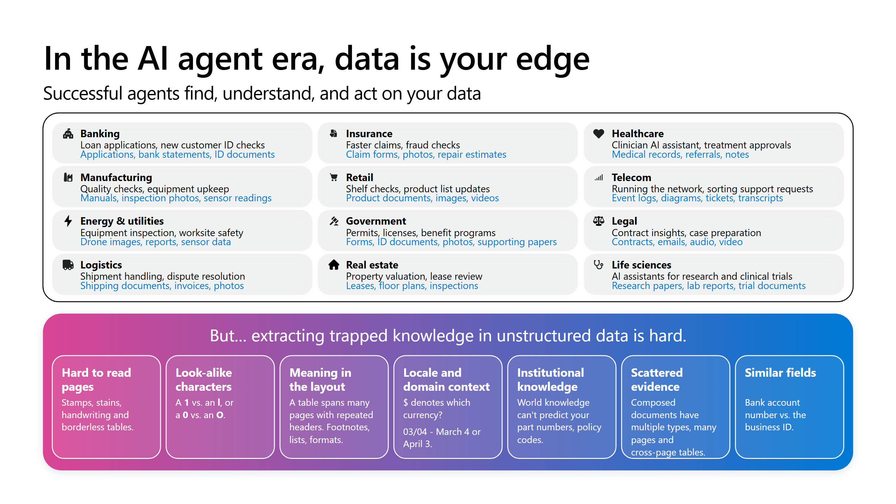
You need a system, not just a model
Production agents need a knowledge extraction system that can read and reason over paragraphs, tables, graphs, charts, flowcharts, and formulas consistently, and scale with demand.
The output needs to fit your organization's schema. Invoice line items, for example, should use the concepts your systems expect, whether you call them articles, products, items, or details.
Confidence scores help determine what needs review under your policies. Source grounding lets reviewers and auditors trace a value back to the evidence. These capabilities also need to be cost-effective, keeping total cost of ownership in view.

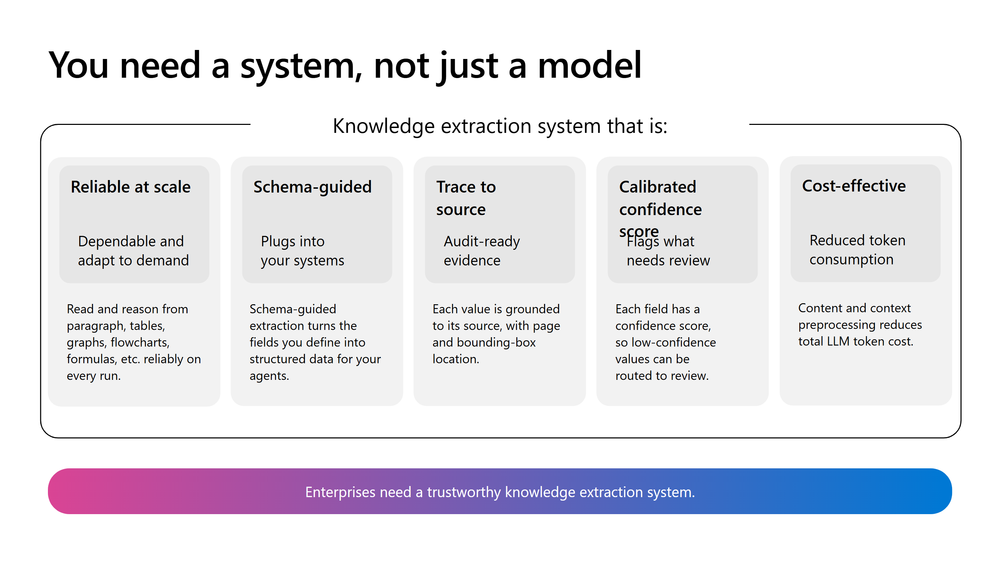
Parse, classify, extract
Azure Document Intelligence and Content Understanding build trust across three stages of knowledge extraction:
- Parse extracts raw text, layout, and formatting from the whole document, preserving the context.
- Classify identifies document sections and selects the analyzer and techniques to apply to each section.
- Extract retrieves or generates the relevant information as the fields your workflow needs.
Together, these stages turn multimodal, unstructured content into structured content with grounding and confidence scores.

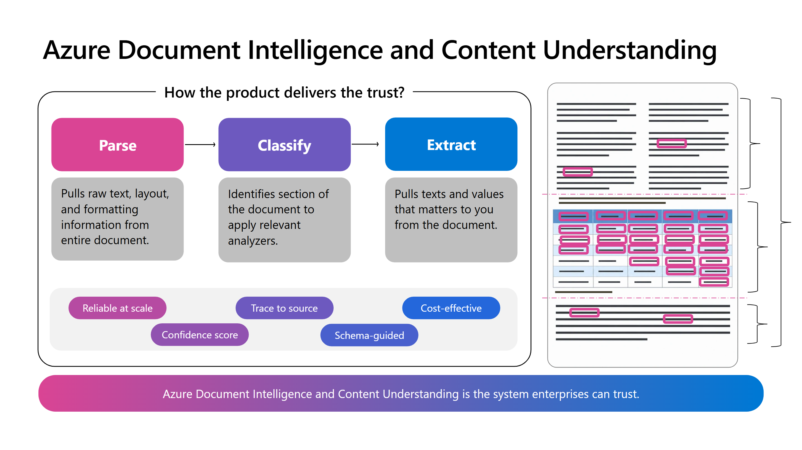

Knowledge and business-process automation
Agent use cases fall into two broad groups. Knowledge scenarios such as search, chat, and eDiscovery need accurate extraction from the whole document, with structure preserved and content traceable to its source.
Business-process automation needs specific information extracted or generated into a defined schema. Claims, accounts payable, loans, supply chains, and tax workflows are examples.
The extraction challenges remain the same across these scenarios. At enterprise document volumes, the work also has to be cost-effective.

Parse: preserve the context in complex inputs
Agents can only reason over knowledge they can read. Real documents contain multiple columns, multipage and nested tables, images with embedded text, headers, footnotes, handwriting, signatures, watermarks, and formulas.
Different challenges call for different parsing techniques. The presentation describes more than a decade of investment in document extraction and introduces parsing capabilities planned for the following quarter.

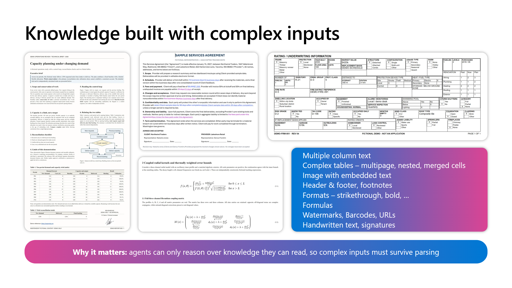

Preserve text formatting
Formatting carries meaning. Strikethrough can identify a change that matters for auditing or change management. Watermark text, in contrast, should not become mixed into the document's main content.
The upcoming capability shown in this example preserves text formatting and layout from a scanned page in structured output. Its Markdown representation retains strikethrough, bold text, and heading hierarchy so downstream tools have the context they need.

Formulas and reading order
The upcoming formula extraction capability returns formulas in LaTeX syntax, which agents can understand and use directly. This helps an agent apply a formula, rather than only find the page where it appears.
Reading order matters just as much. In the homeowners insurance form shown here, some table cells contain nested tables. A person reads left to right and top to bottom, treating the nested tables independently.
An extraction system needs to preserve that order. Otherwise, an agent can associate the wrong content with a field. The example returns fields in human reading order while identifying and parsing the nested tables independently.

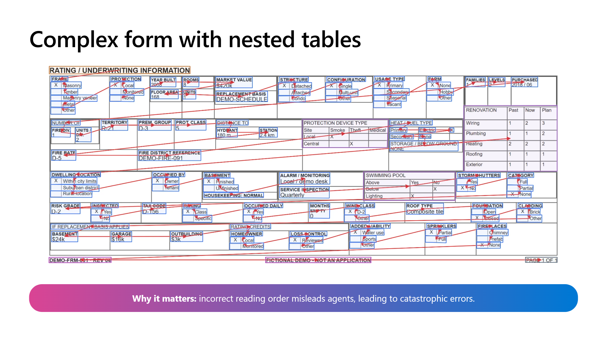

Keep values in the right table rows
Dense tables with merged cells and virtual rows are a common failure point. A value can end up associated with the wrong row or column.
The upcoming capability described in the presentation recognizes virtual rows and extracts the structural information needed to preserve those relationships.

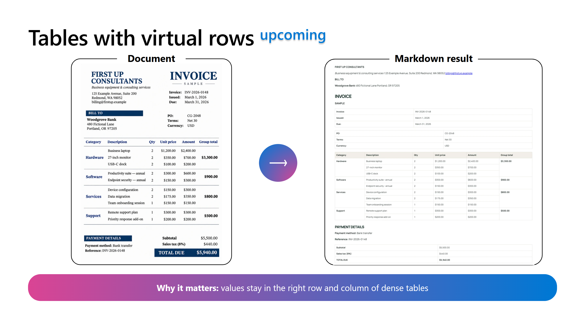
Classify: split the package and route each section
Parsing reads the document as it is. Field extraction turns that information into the concepts and structure your systems need. But first, you need to know what each section is: real work often arrives as a package, not a single form.
Classifiers split documents into sections, identify each section's type, and route it to the appropriate analyzer and schema.

Example: a loan application bundle
The example begins with a 22-page package containing an application, tax forms, and supporting evidence. First, define the expected section classes, such as a birth certificate, identification, and tax forms, with natural-language descriptions.
Map each class to a prebuilt or custom analyzer. The demo uses custom analyzers for document-specific fields: the immigration form returns an office reference number and address, while the utility bill returns an invoice number, due date, and previous balance.
The analyzers can also extract information such as checkboxes and signatures for later validation or review. Field grounding and confidence scores let analysts verify results and route uncertain fields for a second review after calibrating confidence on their documents.

Extract: start simple, add control where needed
Extraction turns parsed, classified content into the fields you need. The presentation describes four options, with different balances of simplicity and control:
- Prebuilt analyzers provide industry schemas and domain knowledge for common document types. Start here when one fits.
- Custom schemas name the fields you need and describe them in natural language.
- Labeled examples guide extraction when a field is difficult to describe.
- Agentic mode, in preview, adds reasoning and document tools for complex tasks where an answer must be built, not simply found.

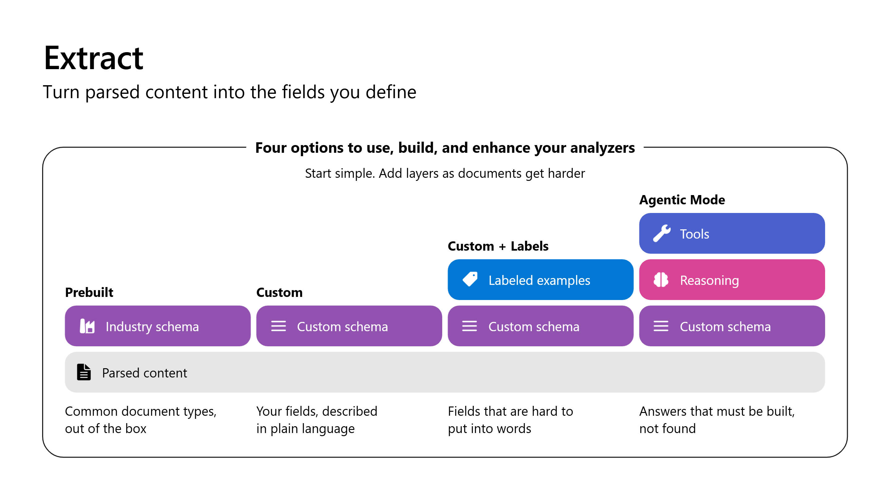
Ready-to-use prebuilt analyzers
A schema describes what to extract, but it does not, by itself, explain whether a string of numbers is an ID or an account number, or how subtotals and tax relate to a total.
Prebuilt analyzers package knowledge learned from real-world documents and rules into ready-to-use solutions for procurement, tax, identity, financials, mortgage, contracts, personal records, and more.
Values are returned with confidence scores and sources so they can be used and reviewed in an automation workflow.

Example: composed tax analyzers
In Studio, prebuilt analyzers are organized by industry. A consolidated 1099 brokerage statement returns fields such as tax year, payer, recipient, and account details. The demo also extracts 1099-B table information, including category, proceeds, cost basis, and market discount.
Grounding links values to their sources, and field-level confidence supports review directly in the document.
Composed analyzers provide one entry point for a family of documents. A composed tax analyzer identifies whether a form is a 1040, 1095-A, W-2, or another supported type, then routes it to the corresponding prebuilt analyzer.

Advanced Contextualization
Advanced Contextualization, presented in preview, applies domain knowledge more efficiently. Across 19 US tax-form categories, the presentation compares the preview with version 1.0:
| Measure | Result reported in the session |
|---|---|
| Extraction accuracy | Up 1.91 F1 points; the slide reports 97.41% to 99.32%. |
| Cost | 51% lower. |
| Latency | About twice as fast. |
The speaker notes round the final F1 score to 99.3%. The plan described in the session is to extend Advanced Contextualization to more prebuilt domains and custom analyzers.

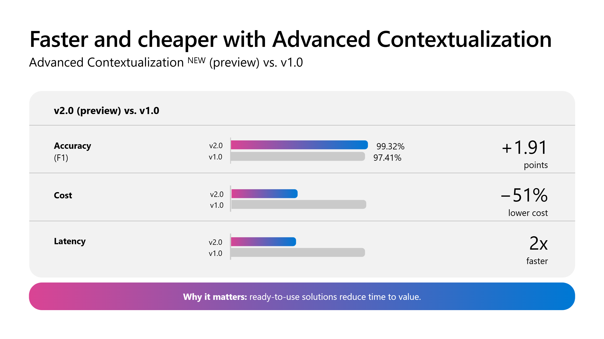
Custom schemas and labeled examples
When no prebuilt analyzer fits, define a custom schema. Name each field and describe what it should contain in natural language. Most fields can work zero-shot.
If a field is missed, difficult to describe, or consistently low-confidence, refine its description or label a sample in Studio, then rebuild and rerun the analyzer.
In the insurance demo, the Remarks field is initially empty. In the Knowledge tab, choose Prepare label files, upload a sample, select the correct value, and confirm the label. After rebuilding and rerunning, Remarks is returned with grounding and confidence.
The notes describe Advanced Contextualization as processing labeled documents into an enhanced schema rather than storing the examples themselves in the analyzer.


Agentic mode: when one pass is not enough
Some tasks extract values exactly as they appear. Others infer an answer from information spread across pages and tables, with rules deciding which values count.
Standard mode works for most scenarios. Agentic mode adds a reasoning loop with document tools for harder cases: navigate, inspect, calculate, validate, and return to the evidence when the first pass does not line up.
Start with standard mode. Try agentic mode on difficult cases, and keep it where the accuracy gain matters most.

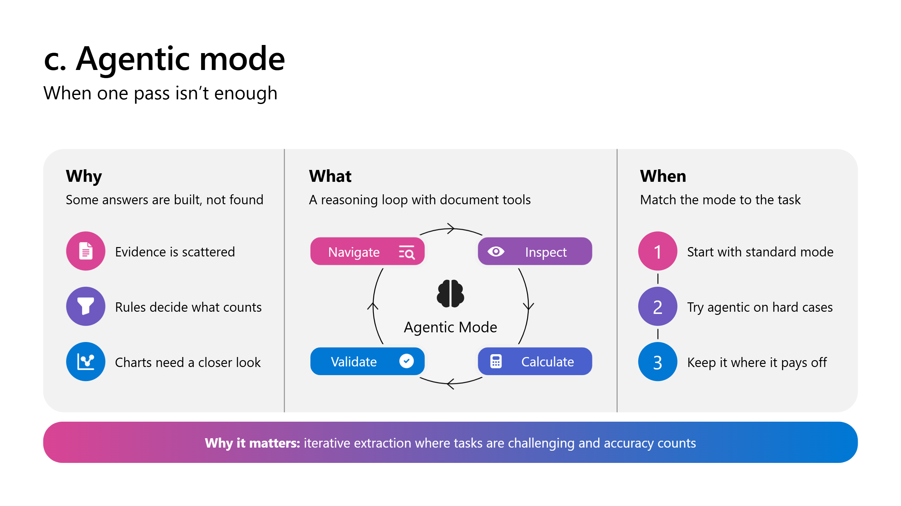
Example: rules, notations, and invoice arithmetic
A long invoice can contain all the values needed for extraction, while a payment question still requires additional reasoning. What amount is supported for accounts payable, and what must be held? The answer depends on receipts, rules, and credits throughout the document.
The demo spans 48 invoice lines and 70 receipt events. Its schema asks for supported goods, credits, payable, and holdback. In standard mode, some payable fields are missing.
With agentic mode, the analyzer navigates the evidence, calculates the supported amount and holdback, and checks its arithmetic: goods, plus zero tax under the exemption, minus final credits, equals the payable.
The result is a supported payable recommendation for human review, not an automatic payment decision.

Confidence and grounding make review possible
Confidence scores help route extraction results for review. After calibrating them on your documents, you can set a threshold for accepting extraction results and send the rest for secondary review.
Grounding traces values to a location on a source page. A reviewer can inspect the evidence on the spot, and an auditor can follow the same trail.
The notes describe these as critical metadata for trusted agents in enterprise workflows.

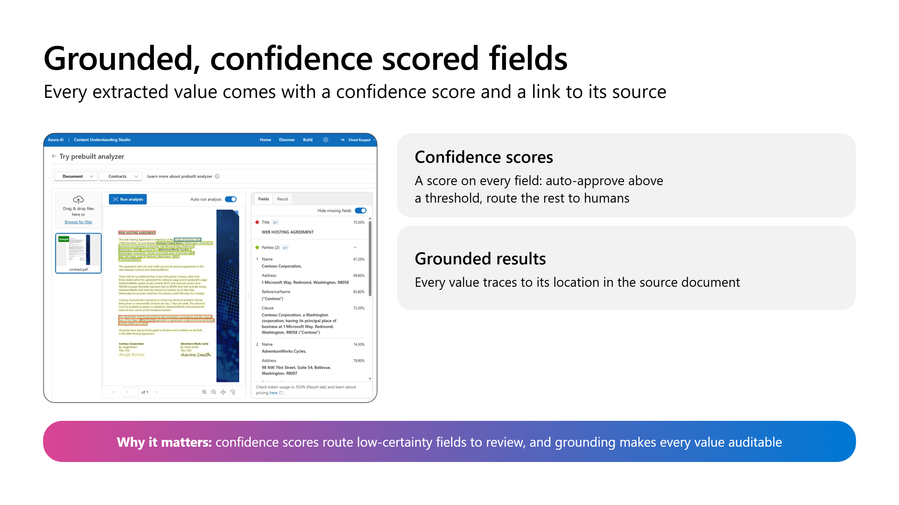
The same challenge across industries
Across industries, businesses need to turn unstructured content into structured, actionable information. The presentation shows examples from financial services, insurance, healthcare, retail, and travel.
The session also introduces Aman, Engineering Lead at Legora, to discuss extracting content from large volumes of legal documents and how Azure Document Intelligence and Content Understanding support the solution.

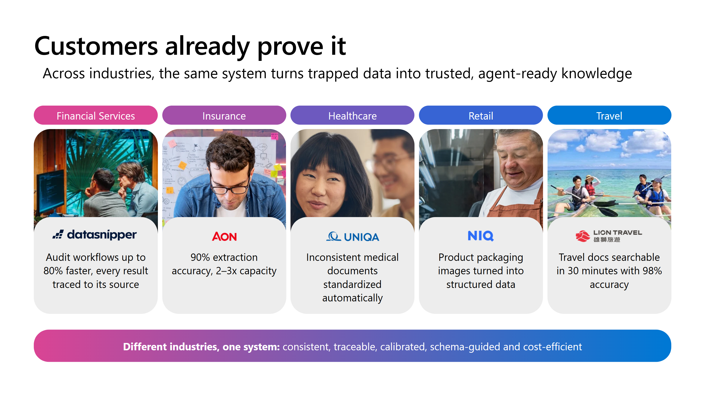

A unified developer experience
Azure Document Intelligence and Azure Content Understanding have different technical approaches and complementary strengths. The session announces a unified product experience in Microsoft Foundry and Studio.
The demo brings Read, Layout, and prebuilt analyzer versions from both products into one place.

A CLI for developers and coding agents
The Content Understanding CLI is presented in preview as part of the Azure Developer CLI, azd, in the Foundry extension bundle. It runs in Bash or PowerShell.
The session shows analyzing a file and drafting a schema from a sample. Plain commands and file outputs give a coding agent steps it can inspect, refine, and rerun.

Roadmap, as presented at Ignite 2026
The roadmap describes work across Q3 and Q4 2026 and plans for Q1 2027. These are the session's time-bound statements, not a live release-status tracker.
| Period | Highlights from the presentation |
|---|---|
| Q3 2026 | CU SDK, signature detection, GPT-5 family support; previews of the synchronous API, agentic mode, Advanced Contextualization, and new tax analyzers. |
| Q4 2026 | GPT-6 family support, data-zone and global processing; previews of the azd AI CLI integration, CU Skills, unified prebuilt experience, and analyzer quality improvements. |
| Q1 2027, planned | General availability targets for preview capabilities, Read and Layout improvements, and more analyzers moving to Advanced Contextualization. |
The original slide contains the detailed preview and GA labels. Timelines are estimates.

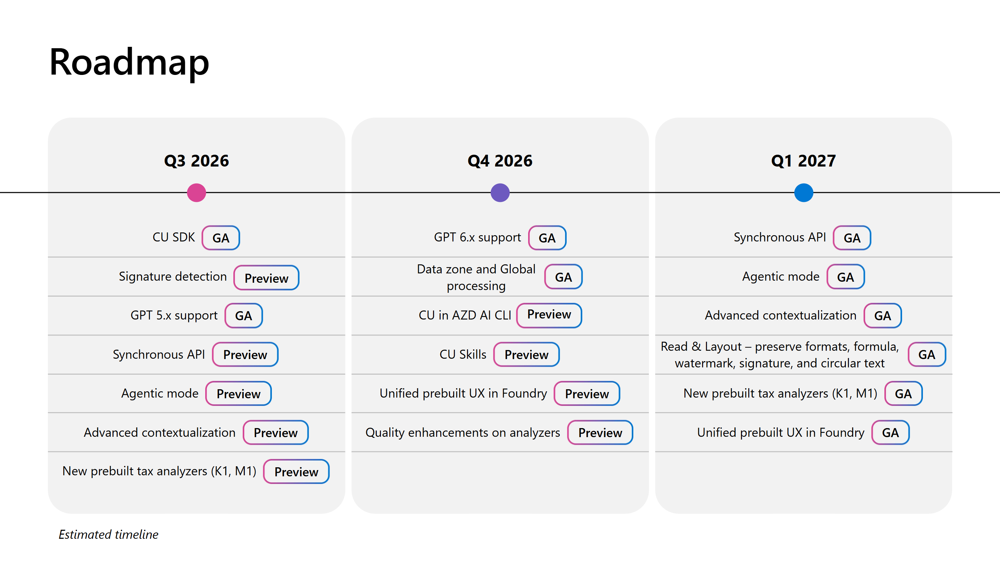
Put it into practice
Trusted agents need a trusted system. Azure Document Intelligence and Content Understanding bring parsing, classification, and extraction together with grounding and confidence to support that workflow.
Try the capabilities in the hands-on LAB664 lab, Build agentic document workflows with Content Understanding. It walks through the features step by step.